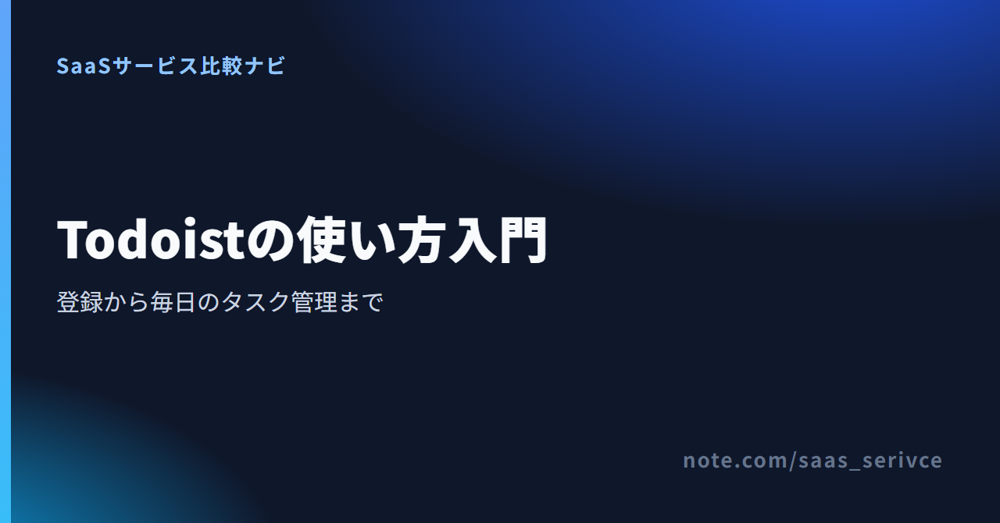

Todoistの使い方【初心者向け】登録・初期設定から基本操作・連携まで
Todoistは、仕事や生活のタスクを登録し、予定日や優先度を付けて管理するサービスです。Web版、パソコン、スマートフォンのどれからでも同じタスクを扱えます。
この記事では、端末選びと登録から、毎日の基本操作、Googleカレンダー連携までを画面の流れに沿って紹介します。
Todoistを使い始める最短手順
最初はWeb版かデスクトップ版でプロジェクトや予定日を設定します。外出先でタスクを追加・完了するなら、スマートフォンが便利です。まずインボックスへ1件入れ、「今日」に表示されたタスクを終えるところまで進めましょう。
- WebまたはPCアプリで登録する
- インボックスへ最初の1件を入れる
- 予定日と繰り返しを設定する
- プロジェクトとセクションに分ける
- 「今日」で実行するタスクを見る
無料で始める入口と、利用できる端末を確認できます。

Web・デスクトップ・スマホアプリの始め方
最初の設定には、画面が広いWeb版かデスクトップアプリが向きます。移動中にタスクを追加・完了するなら、スマホアプリが便利です。
- Web版：インストールせずに登録したい場合
- Windows・Mac版：通知や常駐を使いたい場合
- iPhone・Android版：外出先で追加・完了したい場合
Web版はインストールせずに始められる
公式トップの「無料で開始する」から登録画面へ進みます。登録方法は、メールアドレスとパスワード、Google、Apple、Facebookなどから選べます。
メールで登録した場合は、届いた認証メールで手続きを完了させます。登録後は日本語UIで初期設定へ進めます。
Windows・Macのデスクトップアプリを入れる
パソコンで常にTodoistを開いておきたい場合は、公式のダウンロード画面からOSに合うアプリを選びます。TodoistデスクトップアプリはWindowsとMacに対応しています。
ブラウザだけで足りるなら、インストールは不要です。通知や独立した画面が必要かで選びます。
iPhone・Androidアプリを入れて同期する
スマホでは、公式ストアからTodoistアプリを入れます。パソコンで作ったアカウントと同じ方法でログインすれば、登録済みのタスクが同期されます。
PCとスマホで別々のアカウントを作らないようにします。タスクが見つからない場合は、メールアドレスを見直してください。
登録時と同じ方法でログインする
Todoistへログインするときは、登録時の認証方法を選びます。Google、Apple、Facebookで登録した人は、同じ認証方法でログインするのが基本です。
認証方法を取り違えると、別アカウントに入ったように見える場合があります。詳しい切り分けは後半で扱います。
ブラウザ版と各端末アプリの入口を選べます。
最初のタスクを登録し、プロジェクトとセクションに分ける
思いついたタスクは、先にインボックスへ入れます。あとからプロジェクトやセクションへ移せるため、最初から分類を細かく作る必要はありません。
- インボックス＝分類前のタスクの仮置き場
- プロジェクト＝仕事や生活のまとまり
- セクション＝プロジェクト内の進み具合
インボックスへタスクを1件追加する
Web版かデスクトップ版で「クイック追加」を選びます。キーボードならQキーでも開けます。最初は「提案書の初稿を作る」のように、行動が分かる名前を付けます。
- 「クイック追加」を開く
- 「提案書の初稿を作る」と入力する
- 必要なら「明日 10時」などを続けて入れる
- 「タスクを追加」を選ぶ
- 終わったらタスク左側の丸を押す
追加先を指定しなければ、タスクはインボックスに入ります。どこに置くか迷った内容も、いったんここへ集めて構いません。
プロジェクトで仕事や生活のまとまりを分ける
継続的にタスクが増える仕事や活動は、プロジェクトにまとめます。左側の「マイプロジェクト」にある＋を押し、「営業」と入力して作成します。
インボックスの「提案書の初稿を作る」を開きます。右側のプロジェクト名を押し、移動先に「営業」を選べば分類は完了です。
セクションでプロジェクト内の段階を分ける
Todoistのセクションは、1つのプロジェクト内を区切る機能です。「営業」を開き、タスク一覧の下に表示される「セクションを追加」を押します。「未着手」「進行中」「確認待ち」と作れば、作業の進み具合を一覧で把握できます。
タスクを開き、右側のプロジェクト名から「営業」の「未着手」へ移します。次からはクイック追加で「#営業 /未着手」と入れて、作成時に配置する方法もあります。
大きな作業はサブタスクに分ける
一度では終わらない作業だけをサブタスクにします。「提案書の初稿を作る」を開き、「サブタスクを追加」を選びます。「構成を決める」「数字を集める」「初稿を書く」の順に登録します。
今日取りかかれる大きさまで分けたら、それ以上は階層を増やしません。
予定日・繰り返し・優先度・リマインダーを設定する
タスクを登録したら、次は「いつ取り組むか」を決めます。この節で扱う予定日と時刻はBeginnerでも使えます。「期限」は外部の締切を記録するProまたはBusinessの機能です。
予定日と時刻を日本語で入力する
ここで入力する日付と時刻は、Todoistでは予定日として保存されます。タスク名と一緒に入力すると、Todoistが日付部分を認識します。すぐに試せる入力例は次のとおりです。
- 提案書を送る 明日 10時
- 週報を書く 毎週月曜
- 請求書を確認する 月末
- 面談の準備 9月15日 午後2時
入力後は、文字が日付として認識されているかを見てから保存します。想定と違う場合は、日付選択画面から選び直してください。
繰り返しタスクを設定する
毎週や毎月の仕事には、繰り返しの予定日を使います。「週報を書く 毎週月曜」のように入力し、認識された周期を見て保存する流れです。
完了すると、予定日が次回分に切り替わります。日付の変更と、繰り返し規則の変更は分けて操作します。
優先度を付けて「今日」で順番を決める
予定日は取り組む日を決め、優先度は同じ日に並んだタスクの順番を示します。今日中に終えたい仕事に高い優先度を付けると、「今日」の上部で見つけられます。
すべてを最優先にせず、先に着手する仕事だけに旗を付けます。
リマインダーが必要なら無料版の範囲を確かめる
Beginnerでも、日付と時刻を設定したタスクには自動リマインダーが付きます。通知時刻などを自分で決めるカスタムリマインダーはProの機能です。
カレンダー連携とは別の設定です。通知を受け取りたいなら、まずタスクに時刻が設定されているか確認します。
「今日」・ラベル・フィルター・テンプレートで日々の確認を楽にする
毎朝は「今日」を開き、先の予定は「近日予定」で見渡します。分類項目を一度に増やさず、ラベルとフィルターを1つずつ追加すると崩れにくくなります。
- プロジェクト：継続する仕事をまとめる
- セクション：同じ仕事の段階を分ける
- ラベル：場所や作業条件を付ける
- フィルター：複数条件で表示を絞る
「今日」と「近日予定」で実行日を確認する
「今日」には、全プロジェクトから当日のタスクが集まります。終われば完了、難しければ予定日を変更します。
「近日予定」では先のタスクを日付順に見て、仕事量が偏る日から前後へ移します。
ラベルでプロジェクトをまたぐ条件を付ける
ラベルは「外出」「5分」「電話」のように、複数のプロジェクトへまたがる条件に使います。営業と個人の両方にある外出タスクを、同じラベルで集められます。
場所や道具など、プロジェクトをまたいで見たい条件だけに絞ります。
フィルターで必要なタスクだけを呼び出す
フィルターは、日付、優先度、プロジェクト、ラベルなどの条件を組み合わせた保存済みの表示です。たとえば「今日 & @外出」なら、今日行う外出タスクに絞れます。
Beginnerでも利用できます。まずは毎日見る条件を1つ作ります。
繰り返す仕事はテンプレートにする
Todoistテンプレートは、公式ギャラリーから選ぶか、自分のプロジェクトから作成します。定例会議や月末処理に向く機能です。
自作テンプレートから作ったプロジェクトは、元の内容と同期しません。変更はそれぞれに反映します。
Googleカレンダーと外部サービスを連携する
予定とタスクをまとめて確認したいなら、まずGoogleカレンダー連携を検討します。古い同期画面ではなく、現在の「設定」内にあるカレンダーから接続します。
Googleカレンダーを接続する
Web版では、次の順に進みます。
- 左上のアバターから「設定」を開く
- 「カレンダー」を選ぶ
- Googleカレンダーへの接続を選ぶ
- 必要な権限を許可する
- Todoistに表示するカレンダーを選ぶ
接続後、予定は「今日」と「近日予定」に表示されます。編集時はGoogleカレンダーが開きます。
時間付きタスクをカレンダーへ同期する設定もあります。接続はBeginnerでも使えますが、Todoist内のカレンダーレイアウトはProの機能です。
Todoistで使える連携先と機能の全体像を確認できます。
Googleカレンダーと連携できないときに見る場所
接続したGoogleアカウント、許可した権限、表示対象のカレンダーを順に確認します。
タスクが表示されない場合は、時刻の設定も確認します。直らなければ、Todoistの設定から再接続します。
Notion連携は目的によって方法が異なる
Notion内でTodoistを見たいだけなら、Notionの「/embed」にTodoistのURLを入れます。プロジェクト、フィルター、ラベルの画面も埋め込み可能です。公式ヘルプでは、Webブラウザでの利用が案内されています。
タスク自体を動かす場合は別の仕組みです。2syncはTodoistとNotionの項目を対応させ、一方向または双方向で同期します。Zapierは特定の出来事をきっかけに、Todoistへタスクを作るような自動化に使います。
メール・Google ToDo・Zapierとの連携は必要なものだけ選ぶ
- Gmail：Chrome拡張またはWorkspaceアドオンでメールをタスク化
- Outlook：アドインからメールをタスク化
- Google ToDo：公式の直接同期は連携一覧に掲載なし
- Zapier：別サービスの動きをきっかけにタスクを作成
Google ToDoのタスクがTodoistと自動で同期されるとは限りません。公式の一括移行手順も案内されていないため、直接同期を前提にしないほうが安全です。外部の自動化サービスを使う場合は、同期方向と引き継がれる項目をサービス側で確かめます。
無料版で足りる範囲と有料プランを考える場面
使い始めの基本操作は、継続利用できる無料プランのBeginnerから試せます。一人で使い、Beginnerでは機能が足りなくなったらProを検討します。共有ワークスペースや権限管理、一元請求が必要なチームはBusinessが候補です。
Beginnerで試せる主な範囲
- 個人プロジェクトは5件
- カスタムフィルターは3件
- アクティビティ履歴は1週間
- 日付と時刻付きタスクの自動リマインダー
インボックスへの登録、プロジェクトとセクションによる分類、「今日」と「近日予定」の確認から始めるなら、まずBeginnerで使い方を固められます。
Proを検討する機能
- 個人プロジェクトは300件
- カスタムフィルターは150件
- アクティビティ履歴は全期間
- カレンダーレイアウトとタスク所要時間
- カスタムリマインダー
Proの公式JPY価格は月払い894円、年払い8,064円です。USDでは月払い$7、年払い$60（月$5相当）。7日間のProトライアルは、期間内に解約しなければ有料契約へ自動で移ります。無料のBeginnerとは別なので、開始前に請求条件を見ておきます。
Businessはユーザー単位の契約です。共有チームワークスペース、役割・権限、請求の一元管理が必要な場合に検討します。
BeginnerとProで使える機能の違いを確認できます。
ログインできない・連携できないときの確認順
最初にアカウントを確かめます。次にアプリ、連携権限、稼働状況を切り分けます。別アカウントを作るのは最後にします。
- ログイン不可→登録時の認証方法
- タスクがない→接続中のメールアドレス
- カレンダーがない→Google側の権限と表示対象
- 日付が違う→保存前の認識結果
- 全体が動かない→Todoistの公式ステータス
ログインできないとき
まず、メール、Google、Apple、Facebookなど、どの方法で登録したかを確かめます。メール登録なら入力したアドレスとパスワードを見直し、必要ならパスワード再設定へ進みます。
デスクトップアプリだけログインできない場合は、ブラウザ認証やマジックリンクを試します。複数の端末で同じ問題が起きるなら、公式ステータスも見ます。
Googleカレンダー連携が動かないとき
Google側で許可したアカウントと、普段使うカレンダーのアカウントが一致しているかを見ます。続けて、Todoistに必要な権限、表示するカレンダー、タスクの時刻を順に確かめます。
問題が見つからなければ再接続します。現在の「設定」から「カレンダー」へ進んでください。
日付や繰り返しが意図どおりにならないとき
日本語で日付を入れた後、Todoistが強調表示した部分と日付表示を見ます。認識されていなければ、日付選択画面から設定するのが確実です。
予定日は取り組む日を示し、Beginnerでも使えます。外部の締切を示す「期限」はProまたはBusinessの機能です。Beginnerでは予定日で代用できますが、着手日と最終締切を別々には持てません。
繰り返しでは、完了後に次回の予定日が意図した周期へ移ったかも見直します。
MCP・APIでAIや自作ツールからTodoistを操作する
ClaudeやCodexなどのAIからTodoistを操作するならMCP、自作のPythonプログラムから連携するならAPIが入口です。どちらも初心者の基本操作には必須ではありません。
MCPはClaude・CodexなどのAIアシスタント向け
Claudeなどの対応クライアントでは、Todoist公式のMCPサーバーを追加し、OAuthでアクセスを許可します。GitHub上の非公式MCPサーバーとは別物です。
- Claudeなど：公式MCPサーバーの接続ガイドから設定
- Codex：ChatGPTで公式Todoistプラグインを接続
- 認証：Todoistの画面でアクセスを許可
Codexでは、ChatGPTに接続したTodoistプラグインをそのまま利用できます。手動で接続したい場合は、Todoistの公式ガイドにあるChatGPT向けMCP接続を選びます。
APIはPythonなどの自作連携向け
Todoist APIは、タスクやプロジェクトを自作ツールから扱う仕組みです。公式のPython・TypeScript SDKもあります。
- 向いている人：社内ツールや個人スクリプトを作る人
- 最初に見る場所：Todoist Developers
- 認証：個人利用はAPIトークン、他者向けはOAuth
「API key」とも検索されますが、公式名称はAPIトークンです。「連携機能」から開発者向け画面へ進みます。
古いAPI v2の記事やコードをそのまま使わない
現行ドキュメントはAPI v1です。REST API v2の古いPythonコードは、現在と合わない場合があります。
実装前にTodoist Developersを読み、公式SDKを基準にします。通常の画面で操作の流れを固めてからMCPやAPIへ広げましょう。
通常のタスク管理から始め、必要に応じて開発者向け連携へ進めます。